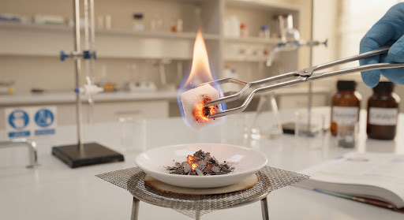
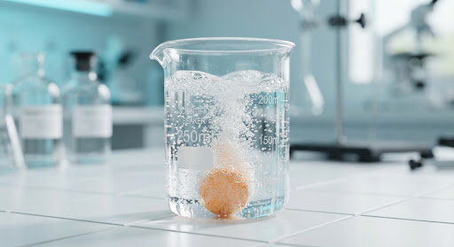

science
پایه هشتم دوره اول متوسطه
فصل ۲: تغییرهای شیمیایی
local_fire_department
۳۵۰ امتیاز مطالعه
school
جمهوری اسلامی ایران - وزارت آموزش و پرورش
کتاب درسی علوم تجربی پایه هشتم
صفحه ۱۴ و ۱۵
stars
نکته طلایی شب امتحان: نشانههای تغییر شیمیایی
در تغییر شیمیایی، ماهیت ذرههای ماده تغییر کرده و ماده جدیدی پدید میآید. مهمترین نشانهها: تغییر رنگ، تولید گاز (حباب)، تغییر دما (آزاد شدن یا جذب گرما) و تشکیل رسوب میباشند.
آزمایش کنید
سوختن قند به کمک خاکستر سیگار یا چوب (کاتالیزگر)
یک حبه قند را روی شعله بگیرید؛ قند به سختی میسوزد و ذوب میشود. حال قند دیگری را به کمی خاکستر آغشته کنید و روی شعله بگیرید. مشاهده میکنید که قند به راحتی شعلهور میشود!


lightbulb
پاسخ و نتیجهگیری آزمایش (کلیک کنید)
expand_more
خاکستر نقش کاتالیزگر را دارد. کاتالیزگرها موادی هستند که سرعت واکنش شیمیایی را افزایش میدهند اما خود در پایان واکنش بدون تغییر شیمیایی باقی میمانند.
فکر کنید - صفحه ۱۵
مثلث آتش و خاموش کردن شمع
برای ادامه سوختن شمع به سه عامل سوخت، اکسیژن و گرما نیاز است (مثلث آتش). با قرار دادن یک بشر یا لیوان شیشهای روی شمع روشن، شمع پس از چند ثانیه خاموش میشود. چرا؟
جدول مقایسهای واکنشهای گرماگیر و گرماده
local_fire_department
واکنش گرماده
واکنشی که با آزادسازی گرما به محیط همراه است.
مثال: سوختن گاز شهری، تنفس
ac_unit
واکنش گرماگیر
واکنشی که برای انجام شدن نیاز به جذب گرما دارد.
مثال: پختن نان، فتوسنتز گیاه
brush
یادداشت شخصی شما: کاتالیزگر در ساختار فراوردهها وارد نمیشود!
close
دانا: بپرس چرا قرص جوشان حباب میده؟